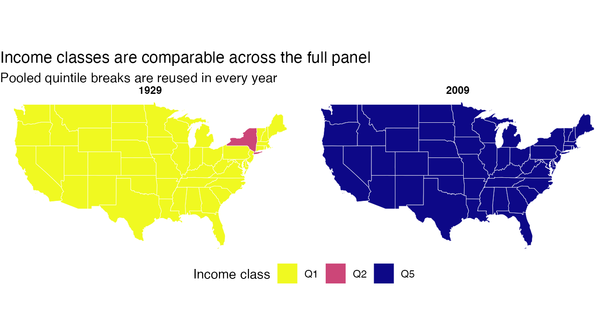
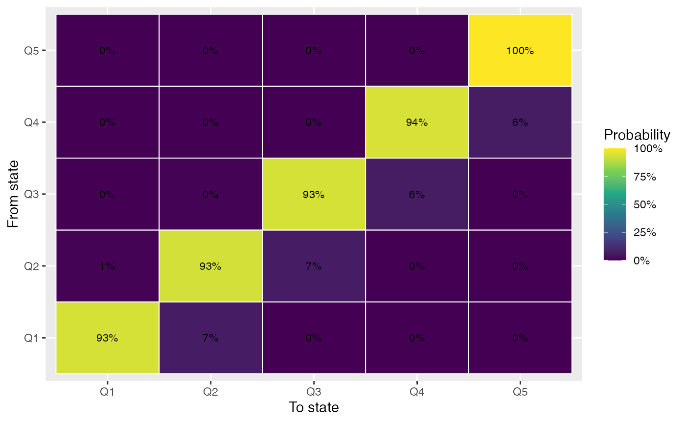
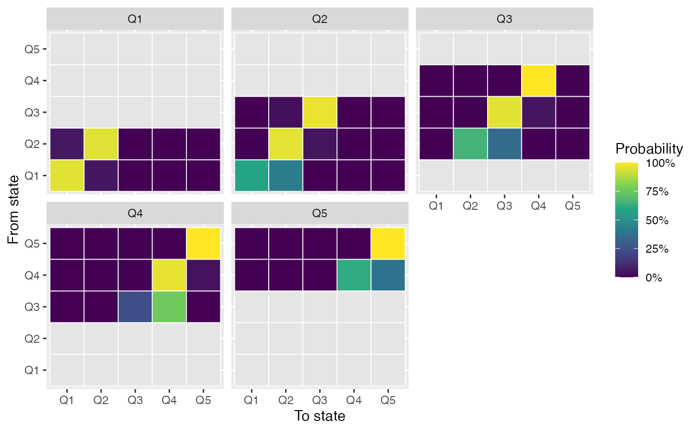

library(griddy)
library(dplyr)
library(ggplot2)
library(sf)
library(sfdep)
library(spData)
library(tidyr)griddy works on long spatial panels: one row per place
per period, keyed by explicit id, time, and
value columns. The bundled usjoin panel — 48
contiguous US states, per-capita personal income, 1929 to 2009 — mirrors
the canonical PySAL giddy example used in Rey (2001).
data(usjoin)
usjoin## # A tibble: 3,888 × 4
## name state_fips year income
## <chr> <int> <int> <int>
## 1 Alabama 1 1929 323
## 2 Alabama 1 1930 267
## 3 Alabama 1 1931 224
## 4 Alabama 1 1932 162
## 5 Alabama 1 1933 166
## 6 Alabama 1 1934 211
## 7 Alabama 1 1935 217
## 8 Alabama 1 1936 251
## 9 Alabama 1 1937 267
## 10 Alabama 1 1938 244
## # ℹ 3,878 more rowsClassification
Pooled quantile classification cuts the entire panel into five bins and reuses the same breakpoints for every year. That keeps class meanings comparable across periods, which matters because year-specific quantiles can hide absolute movement.
classes <- classify_dynamics(usjoin, name, year, income, k = 5)
class_intervals(classes)## # A tibble: 5 × 4
## class lower upper type
## <ord> <dbl> <dbl> <chr>
## 1 Q1 127 1049. value
## 2 Q2 1049. 2238. value
## 3 Q3 2238. 7050. value
## 4 Q4 7050. 20739. value
## 5 Q5 20739. 54528 valueClassic Markov
classic <- markov_dynamics(classes, name, year, class)
classic## <grd_markov>
## 5 states, 3840 observed transitions
##
## Q1 Q2 Q3 Q4 Q5
## Q1 0.934447301 0.065552699 0.000000000 0.000000000 0.000000000
## Q2 0.005148005 0.929214929 0.065637066 0.000000000 0.000000000
## Q3 0.000000000 0.003856041 0.934447301 0.061696658 0.000000000
## Q4 0.000000000 0.000000000 0.000000000 0.938223938 0.061776062
## Q5 0.000000000 0.000000000 0.000000000 0.000000000 1.000000000
plot_transition_matrix(classic)
The diagonal dominance of the matrix — most states stay in their starting quintile from one year to the next — is the headline finding from this panel and recovers the result Rey (2001) reports.
Spatial Markov
Spatial Markov conditions transition probabilities on the starting class of each unit’s spatial lag. The expectation is that being surrounded by rich (or poor) neighbors shifts the transition odds beyond what the unit’s own class would predict.
states <- us_states |>
st_drop_geometry() |>
filter(NAME %in% usjoin$name) |>
pull(NAME)
geom <- us_states |>
filter(NAME %in% usjoin$name) |>
arrange(NAME) |>
mutate(
nb = st_contiguity(geometry),
wt = st_weights(nb)
)
panel <- usjoin |>
filter(name %in% states) |>
arrange(name, year)geometry is the preferred way to pass spatial weights:
an sf tibble with one row per unit and nb /
wt list-columns produced by sfdep. Carrying
weights as columns on the geography keeps the spatial frame, the
weights, and their row-standardization choice in one tidy object.
spatial <- spatial_markov(panel, name, year, income, geometry = geom, k = 5)
lag_intervals(spatial)## # A tibble: 5 × 4
## class lower upper type
## <ord> <dbl> <dbl> <chr>
## 1 Q1 181 1077. spatial_lag
## 2 Q2 1077. 2213. spatial_lag
## 3 Q3 2213. 7052. spatial_lag
## 4 Q4 7052. 21042. spatial_lag
## 5 Q5 21042. 52568. spatial_lag
transition_matrix(spatial, "probability", lag_class = "Q1")## Q1 Q2 Q3 Q4 Q5
## Q1 0.95270270 0.0472973 0 0 0
## Q2 0.05263158 0.9473684 0 0 0
## Q3 NA NA NA NA NA
## Q4 NA NA NA NA NA
## Q5 NA NA NA NA NA
plot_spatial_markov(spatial)
Reading the facets left to right: states whose neighbors sit in the lowest income lag class (Q1) are much stickier at the bottom of the distribution than the pooled transition matrix would suggest. The spatial context conditioning is what spatial Markov is built to surface.
Rank Mobility
Rank mobility is intentionally simple in v0.1: an endpoint comparison of unit ranks between the first and last observed periods. It is descriptive and map-ready, not the full PySAL rank-method suite.
mobility_panel <- usjoin |>
filter(name %in% states) |>
left_join(geom |> select(NAME), by = c("name" = "NAME")) |>
st_as_sf()
mobility <- rank_mobility(mobility_panel, name, year, income)
mobility |>
st_drop_geometry() |>
arrange(desc(abs_rank_change)) |>
select(name, start_rank, end_rank, rank_change) |>
head()## <grd_rank_mobility>
## # A tibble: 6 × 4
## name start_rank end_rank rank_change
## <chr> <int> <int> <int>
## 1 Virginia 36 6 30
## 2 North Dakota 41 17 24
## 3 Michigan 10 32 -22
## 4 Ohio 12 31 -19
## 5 Utah 29 47 -18
## 6 Arizona 24 41 -17
plot_rank_mobility(mobility)
Output schemas
Each result object exposes a tidy transitions table and
a long matrix table keyed by class labels. Inspecting them
directly is the simplest way to learn the schema.
classic$transitions |> head()## # A tibble: 6 × 6
## id from_time to_time from_state to_state transition
## <chr> <int> <int> <ord> <ord> <chr>
## 1 Alabama 1929 1930 Q1 Q1 Q1 -> Q1
## 2 Alabama 1930 1931 Q1 Q1 Q1 -> Q1
## 3 Alabama 1931 1932 Q1 Q1 Q1 -> Q1
## 4 Alabama 1932 1933 Q1 Q1 Q1 -> Q1
## 5 Alabama 1933 1934 Q1 Q1 Q1 -> Q1
## 6 Alabama 1934 1935 Q1 Q1 Q1 -> Q1## # A tibble: 6 × 6
## id from_time to_time lag_class transition spatial_lag
## <chr> <int> <int> <ord> <chr> <dbl>
## 1 Alabama 1929 1930 Q1 Q1 -> Q1 382.
## 2 Alabama 1930 1931 Q1 Q1 -> Q1 326
## 3 Alabama 1931 1932 Q1 Q1 -> Q1 276.
## 4 Alabama 1932 1933 Q1 Q1 -> Q1 211
## 5 Alabama 1933 1934 Q1 Q1 -> Q1 207.
## 6 Alabama 1934 1935 Q1 Q1 -> Q1 253.For programmatic access, every griddy object also has
as.data.frame() and the S3 generics
transition_matrix(), class_intervals(), and
(for spatial objects) lag_intervals().